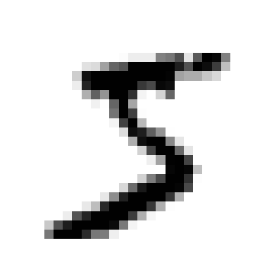
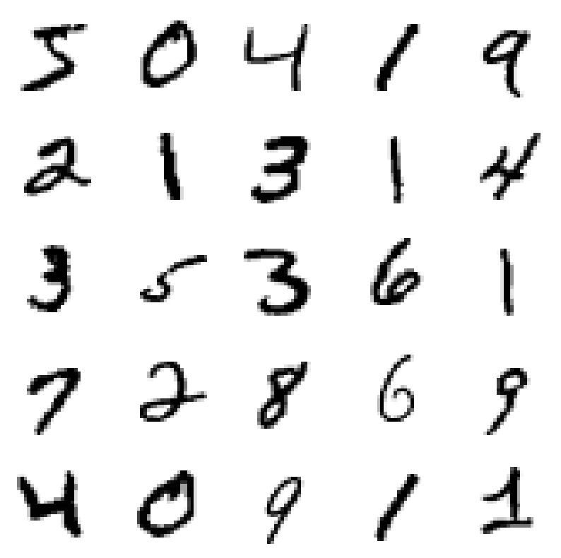
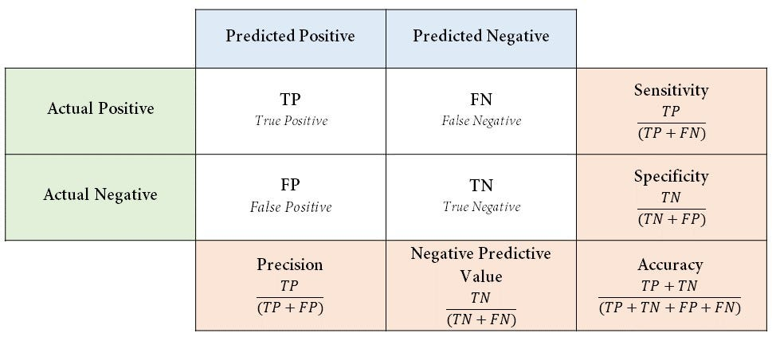
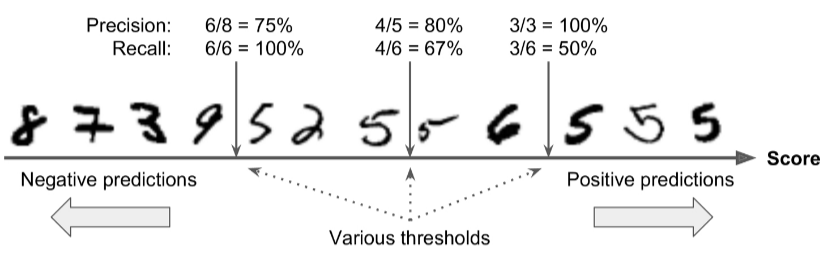
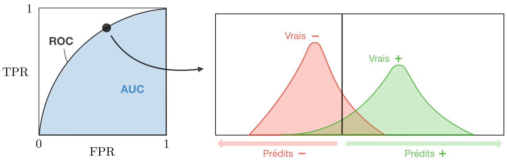

Évaluation d’un modèle de classification#
Pourquoi ce notebook est important#
On a déjà vu dans 03-use-sklearn-algorithms/03-evaluate-regression-model comment évaluer un modèle de régression (MAE, RMSE, R²…). Ici on s’attaque au cas classification, qui pose des questions très différentes :
L’analogie à garder en tête : un modèle de classification est comme un détecteur de fumée. Il doit sonner quand il y a un vrai incendie (vrai positif) et rester silencieux sinon (vrai négatif). Mais il peut se tromper de deux façons :
Fausse alerte (faux positif) : il sonne alors qu’il n’y a rien — agaçant mais pas catastrophique.
Incendie raté (faux négatif) : il ne sonne pas alors que ça brûle — potentiellement mortel.
Ces deux erreurs ne sont pas équivalentes. Selon le contexte, on voudra privilégier l’une ou l’autre. C’est tout l’enjeu de l’évaluation d’un modèle de classification : choisir la bonne métrique en fonction du coût métier des erreurs.
Le plan#
Comprendre le dataset MNIST — 70 000 images de chiffres manuscrits (28×28 pixels).
Simplifier en problème binaire : « cette image est-elle un 5, oui ou non ? ». Plus simple à expliquer pour voir les concepts clés.
L’accuracy et son piège : pourquoi un score élevé ne veut parfois rien dire.
Matrice de confusion : le vrai outil de diagnostic d’un classifieur.
Précision, rappel, F1 : trois métriques dérivées de la matrice, chacune répondant à une question métier différente.
Arbitrage précision/rappel : déplacer le seuil de décision pour ajuster le compromis.
Courbe ROC et AUC : visualiser et résumer la capacité discriminative globale du modèle.
import matplotlib.pyplot as plt
import numpy as np
import pandas as pd
%matplotlib inline
from sklearn.datasets import fetch_openml
mnist = fetch_openml("mnist_784", parser="auto", version=1)
data = mnist.data
target = mnist.target
# data.join(target).to_csv("../../data/mnist.csv", index=False)
# mnist_csv = pd.read_csv("../../data/mnist.csv")
# data = mnist_csv.drop("class", axis=1)
# target = mnist_csv["class"]
Comprendre les données#
Le dataset MNIST est un classique absolu en deep learning et en machine learning : 70 000 images de chiffres manuscrits (0 à 9), chacune de 28×28 pixels en niveaux de gris.
Pourquoi MNIST est souvent le premier exemple ?
Petite taille (~11 Mo), rapide à charger et à entraîner.
Données propres (pré-nettoyées, labellisées).
Problème visuellement intuitif : on voit ce que le modèle doit apprendre.
Baseline bien connue : on sait ce qu’un « bon » modèle devrait atteindre (> 99% d’accuracy avec un bon algo).
Format des données : chaque image est aplatie en un vecteur de 784 valeurs (= 28 × 28), chaque valeur étant l’intensité d’un pixel entre 0 (blanc) et 255 (noir).
print(mnist.DESCR)
**Author**: Yann LeCun, Corinna Cortes, Christopher J.C. Burges
**Source**: [MNIST Website](http://yann.lecun.com/exdb/mnist/) - Date unknown
**Please cite**:
The MNIST database of handwritten digits with 784 features, raw data available at: http://yann.lecun.com/exdb/mnist/. It can be split in a training set of the first 60,000 examples, and a test set of 10,000 examples
It is a subset of a larger set available from NIST. The digits have been size-normalized and centered in a fixed-size image. It is a good database for people who want to try learning techniques and pattern recognition methods on real-world data while spending minimal efforts on preprocessing and formatting. The original black and white (bilevel) images from NIST were size normalized to fit in a 20x20 pixel box while preserving their aspect ratio. The resulting images contain grey levels as a result of the anti-aliasing technique used by the normalization algorithm. the images were centered in a 28x28 image by computing the center of mass of the pixels, and translating the image so as to position this point at the center of the 28x28 field.
With some classification methods (particularly template-based methods, such as SVM and K-nearest neighbors), the error rate improves when the digits are centered by bounding box rather than center of mass. If you do this kind of pre-processing, you should report it in your publications. The MNIST database was constructed from NIST's NIST originally designated SD-3 as their training set and SD-1 as their test set. However, SD-3 is much cleaner and easier to recognize than SD-1. The reason for this can be found on the fact that SD-3 was collected among Census Bureau employees, while SD-1 was collected among high-school students. Drawing sensible conclusions from learning experiments requires that the result be independent of the choice of training set and test among the complete set of samples. Therefore it was necessary to build a new database by mixing NIST's datasets.
The MNIST training set is composed of 30,000 patterns from SD-3 and 30,000 patterns from SD-1. Our test set was composed of 5,000 patterns from SD-3 and 5,000 patterns from SD-1. The 60,000 pattern training set contained examples from approximately 250 writers. We made sure that the sets of writers of the training set and test set were disjoint. SD-1 contains 58,527 digit images written by 500 different writers. In contrast to SD-3, where blocks of data from each writer appeared in sequence, the data in SD-1 is scrambled. Writer identities for SD-1 is available and we used this information to unscramble the writers. We then split SD-1 in two: characters written by the first 250 writers went into our new training set. The remaining 250 writers were placed in our test set. Thus we had two sets with nearly 30,000 examples each. The new training set was completed with enough examples from SD-3, starting at pattern # 0, to make a full set of 60,000 training patterns. Similarly, the new test set was completed with SD-3 examples starting at pattern # 35,000 to make a full set with 60,000 test patterns. Only a subset of 10,000 test images (5,000 from SD-1 and 5,000 from SD-3) is available on this site. The full 60,000 sample training set is available.
Downloaded from openml.org.
data.shape, target.shape
((70000, 784), (70000,))
On affiche le premier digit pour vérifier qu’on a bien compris le format. Un vecteur de 784 valeurs doit pouvoir être remis en forme (28, 28) et affiché comme une image.
X = data.values
first_digit = X[0]
first_digit_image = first_digit.reshape(28, 28)
plt.imshow(first_digit_image, cmap="binary")
plt.axis("off");

…et le label correspondant — qu’est-ce que ce chiffre est censé représenter ?
target[0]
'5'
On convertit les labels de chaînes de caractères ('5') vers des entiers (5). Pourquoi ? Parce que la plupart des algorithmes de classification scikit-learn attendent des labels numériques, et c’est plus pratique pour faire des comparaisons et des filtres (y == 5).
y = target.astype(np.uint8)
assert y[0] == 5
On affiche les 25 premières images pour avoir une vue d’ensemble du dataset. C’est un geste d’EDA : « à quoi ressemblent mes données ? ».
plt.figure(figsize=(10,10))
for i in range(25):
digit_image = X[i].reshape(28, 28)
plt.subplot(5, 5, i+1)
plt.xticks([])
plt.yticks([])
plt.grid(False)
plt.imshow(digit_image, cmap=plt.cm.binary)
plt.axis("off")
# plt.xlabel(y[i])

Note importante : les digits sont déjà distribués aléatoirement dans le jeu de données (c’est une propriété de MNIST). Pas besoin de passer par train_test_split pour mélanger — on peut juste faire un découpage par index. Les 60 000 premiers servent au train, les 10 000 derniers au test.
⚠️ Attention : ce raccourci n’est valable que parce qu’on sait que les données sont déjà mélangées. Sur un dataset « brut » (par exemple trié par date ou par classe), couper sans
shuffleintroduirait un biais massif. Quand on a un doute, on utilise toujourstrain_test_splitavecshuffle=True.
# Les premières 60000 images -> train set
# Les dernières 10000 images -> test set
X_train, X_test, y_train, y_test = X[:60_000], X[60_000:], y[:60_000], y[60_000:]
Classification binaire#
On simplifie le problème : au lieu de distinguer les 10 chiffres, on se pose une question plus simple — « cette image est-elle un 5, oui ou non ? ». C’est donc un problème de classification binaire (2 classes : 5 / pas 5).
Pourquoi simplifier ? Parce que l’accuracy, la précision, le rappel, la matrice de confusion… sont d’abord conçus pour 2 classes. En binaire, on a une notion claire de positif (ici, la classe
5) et négatif (tout le reste). Ça permet d’introduire tous les concepts sans ajouter la complexité du multiclasse.
y_train_5 = (y_train == 5)
y_test_5 = (y_test == 5)
print(f"Il existe {y_train_5.sum()} 5 dans le jeu de train.")
Il existe 5421 5 dans le jeu de train.
print(f"{y_train_5.sum()/y_train.shape[0]*100:.2f}% des digits sont des 5.")
9.04% des digits sont des 5.
On utilise un SGDClassifier — Stochastic Gradient Descent Classifier. C’est un classifieur linéaire (une régression logistique, en gros) entraîné par descente de gradient stochastique. Rapide, simple, parfait pour une démo.
Pourquoi ce choix ? Parce que l’objectif ici n’est pas de trouver le meilleur modèle pour classer les 5, mais d’illustrer les métriques d’évaluation. Un modèle simple suffit — et ses erreurs seront suffisamment nombreuses pour être intéressantes à analyser.
from sklearn.linear_model import SGDClassifier
sgd_clf = SGDClassifier(random_state=2, n_jobs=-1)
sgd_clf.fit(X_train, y_train_5)
SGDClassifier(n_jobs=-1, random_state=2)In a Jupyter environment, please rerun this cell to show the HTML representation or trust the notebook.
On GitHub, the HTML representation is unable to render, please try loading this page with nbviewer.org.
SGDClassifier(n_jobs=-1, random_state=2)
sgd_clf.predict([first_digit])
array([ True])
C’est bien un 5 ! Le modèle a donné la bonne réponse sur l’exemple qu’on lui a montré. Mais… une seule prédiction correcte ne veut rien dire. Il faut évaluer sur beaucoup d’exemples, en cross-validation, avec une métrique pertinente.
Mesures de performance avec la cross-validation#
On va commencer par la métrique la plus intuitive : l”accuracy (justesse).
\( \Large{ \text{accuracy} = \frac{\text{nombre de bonnes prédictions}}{\text{nombre total de prédictions}} } \)
Interprétation simple : « sur 100 prédictions, combien sont correctes ? ». Un score de 0,95 signifie 95% de bonnes réponses.
On utilise la cross-validation pour avoir une estimation fiable (pas dépendante d’un tirage particulier train/val), comme vu dans le notebook sur la cross-validation.
from sklearn.model_selection import cross_val_score
cross_val_score(sgd_clf, X_train, y_train_5, cv=3, scoring="accuracy", n_jobs=-1)
array([0.9636 , 0.96275, 0.9657 ])
~96% d’accuracy — excellent, non ? Mauvais réflexe de s’enthousiasmer tout de suite. Avant de célébrer, il faut toujours comparer à un prédicteur bête pour voir si le modèle « fait vraiment quelque chose ».
Le test du prédicteur bête : on crée un classifieur qui prédit toujours la classe majoritaire — ici, « ce n’est jamais un 5 ». C’est le genre de prédicteur qui ne sait absolument rien du problème.
from sklearn.dummy import DummyClassifier
never_5_clf = DummyClassifier(strategy="constant", constant=0)
cross_val_score(never_5_clf, X_train, y_train_5, cv=3, scoring="accuracy")
array([0.90965, 0.90965, 0.90965])
~91% d’accuracy… pour un algorithme qui dit toujours « non ».
🎯 Le piège de l’accuracy sur des classes déséquilibrées :
Seulement ~10% des chiffres sont des 5. Donc si on dit toujours « pas un 5 », on a raison… 90% du temps — sans rien apprendre. Notre vrai modèle fait 96%, soit seulement 5 points de mieux qu’un prédicteur stupide. Pas si impressionnant, finalement.
Conséquence pratique : sur les datasets déséquilibrés (détection de fraude, maladies rares, anomalies industrielles, clics publicitaires…), l’accuracy est une métrique trompeuse. Il faut utiliser d’autres métriques (précision, rappel, F1, ROC-AUC) pour évaluer sérieusement la qualité du modèle.
Règle d’or : toujours comparer à un
DummyClassifieravant de célébrer un score. Si ton modèle ne bat pas clairement le dummy, soit le problème est très dur, soit ton modèle n’a rien appris.
Matrice de confusion — le vrai outil de diagnostic#
L’accuracy est trop brute : elle mélange tous les types d’erreurs en un seul chiffre. Pour comprendre comment un classifieur se trompe, on utilise la matrice de confusion.
Anatomie d’une matrice de confusion (binaire)#
Prédit : Négatif |
Prédit : Positif |
|
|---|---|---|
Réel : Négatif |
✅ TN — Vrai Négatif |
❌ FP — Faux Positif |
Réel : Positif |
❌ FN — Faux Négatif |
✅ TP — Vrai Positif |
Les 4 cases à connaître par cœur :
TP (True Positive) — l’exemple est vraiment positif, le modèle le dit. ✅
TN (True Negative) — l’exemple est vraiment négatif, le modèle le dit. ✅
FP (False Positive) — le modèle dit « positif » alors que non. ❌ Fausse alerte.
FN (False Negative) — le modèle dit « négatif » alors que oui. ❌ Occasion manquée.
Pourquoi c’est essentiel : la matrice révèle quel type d’erreur le modèle commet. Deux modèles peuvent avoir la même accuracy mais des profils d’erreurs opposés — et dans un contexte métier, ça change tout.
Exemples pour bien comprendre :
Test médical pour une maladie grave → un FN (dire « vous êtes en bonne santé » à quelqu’un qui est malade) est beaucoup plus grave qu’un FP (faire faire un examen complémentaire inutile à quelqu’un en bonne santé). On veut minimiser les FN.
Spam filter → un FN (laisser passer un spam) est agaçant. Un FP (classer un vrai email important comme spam) est beaucoup plus grave. On veut minimiser les FP.
Détection de fraude bancaire → un FN (laisser passer une fraude) coûte cher. Un FP (bloquer une transaction légitime) agace le client. L’équilibre dépend du montant.
Sans la matrice de confusion, on ne peut pas faire ces arbitrages.

Prédiction sur les données de test#
Avant de dessiner la matrice, il faut des prédictions. On entraîne donc le modèle une dernière fois sur tout le train, puis on prédit sur le test.
sgd_clf = SGDClassifier(random_state=2, n_jobs=-1)
sgd_clf.fit(X_train, y_train_5)
y_test_pred = sgd_clf.predict(X_test)
On va maintenant utiliser une matrice de confusion pour examiner comment le modèle se trompe — pas juste combien de fois.
from sklearn.metrics import confusion_matrix
cm = confusion_matrix(y_test_5, y_test_pred)
cm
array([[9047, 61],
[ 227, 665]])
Le résultat brut est un tableau 2×2 de chiffres — lisible mais pas très parlant. On va la rendre plus visuelle avec yellowbrick, qui affiche une heatmap colorée et annotée.
from yellowbrick.classifier import confusion_matrix
confusion_matrix(
SGDClassifier(random_state=2, n_jobs=-1),
X_train, y_train_5, X_test, y_test_5,
classes=['autre', '5'], percent=True
)
Lecture guidée :
La diagonale (TN, TP) contient les prédictions correctes. Plus elle est « chaude », mieux le modèle s’en sort.
Hors diagonale : les erreurs. FP en haut à droite, FN en bas à gauche.
Sur ce modèle, on voit que la ligne des positifs (les 5) est celle qui contient le plus d’erreurs : le modèle rate beaucoup de 5 (FN élevé) mais se trompe peu en disant « 5 » (FP faible).
Interprétation métier : ce modèle est prudent — il préfère ne pas dire « 5 » si ce n’est pas clair. C’est bien si on veut peu de fausses alertes, mal si on veut détecter tous les 5.
On peut rééquilibrer le modèle si les faux négatifs sont trop coûteux. Une façon simple : utiliser class_weight='balanced' sur le SGDClassifier. Scikit-learn donne alors plus de poids aux exemples de la classe minoritaire pendant l’entraînement → le modèle ose davantage dire « 5 », au prix de plus de fausses alertes.
Mental model :
class_weight='balanced'dit au modèle « chaque 5 compte comme si c’était 9 exemples (parce qu’il y a 9× moins de 5 que de non-5) ». Le modèle va donc plus « écouter » les 5 pendant l’apprentissage.C’est un ajustement gratuit à essayer dès qu’on a un dataset déséquilibré et qu’on veut plus de sensibilité (recall). On verra le résultat dans la prochaine matrice de confusion.
from yellowbrick.classifier import confusion_matrix
confusion_matrix(
SGDClassifier(class_weight="balanced", random_state=2, n_jobs=-1),
X_train, y_train_5, X_test, y_test_5,
classes=['autre', '5'], percent=True
)
Métriques issues de la matrice de confusion#
La matrice de confusion contient tout ce qu’il faut, mais c’est parfois trop. On veut souvent un seul chiffre qui résume la qualité du modèle sous un angle précis. D’où les métriques dérivées, chacune répondant à une question spécifique.
Précision — « quand mon modèle dit positif, a-t-il raison ? »#
\( \Large{ \text{Précision} = \frac{TP}{TP + FP} } \)
En langage courant : parmi toutes les prédictions « positif » du modèle, quelle proportion est effectivement correcte ?
Un modèle avec une précision de 1 ne fait jamais de faux positif : quand il dit « positif », c’est toujours vrai (mais il peut rater beaucoup de vrais positifs — la précision ne dit rien là-dessus).
Précision faible → beaucoup de fausses alertes.
Rappel — « parmi tous les vrais positifs, combien mon modèle en détecte-t-il ? »#
(aussi appelé sensibilité ou recall)
\( \Large{ \text{Rappel} = \frac{TP}{TP + FN} } \)
En langage courant : parmi tous les cas réellement positifs, quelle proportion le modèle a-t-il réussi à identifier comme telle ?
Un modèle avec un rappel de 1 ne rate aucun positif : dès qu’il y a un cas positif, le modèle le trouve (mais il peut faire beaucoup de fausses alertes).
Rappel faible → beaucoup d’occasions manquées.
L’image à retenir#

F1 score — « l’équilibre entre précision et rappel »#
\( \Large{ F_1 = \frac{2}{\frac{1}{\text{précision}} + \frac{1}{\text{rappel}}} = 2 \cdot \frac{\text{précision} \cdot \text{rappel}}{\text{précision} + \text{rappel}} } \)
C’est la moyenne harmonique de la précision et du rappel. Pourquoi harmonique et pas arithmétique ?
L’intuition : la moyenne harmonique pénalise les déséquilibres. Si un modèle a précision = 1 et rappel = 0, la moyenne arithmétique donne 0,5 (c’est-à-dire « moyen »). Mais c’est un modèle inutile — il ne trouve jamais rien. La moyenne harmonique dit : F1 = 0, ce qui est bien plus honnête.
Conclusion : F1 est proche de sa plus petite valeur d’entrée. Pour avoir un F1 élevé, il faut que précision et rappel soient tous les deux bons. C’est exactement ce qu’on veut si on n’a pas de préférence marquée pour l’un ou l’autre.
En résumé — quand utiliser quelle métrique ?#
Métrique |
Cas d’usage |
Exemple typique |
|---|---|---|
Accuracy |
Classes équilibrées (~50/50) et coûts d’erreur similaires |
Classification de genre |
Précision |
Optimiser les vrais positifs parmi les alertes ; un FP est coûteux |
Filtre anti-spam : rater un vrai email (FP) est pire que laisser passer un spam |
Rappel |
Ne pas rater les positifs ; un FN est coûteux |
Diagnostic médical : rater une maladie (FN) est pire qu’un test inutile |
F1 Score |
Classes déséquilibrées et on veut un équilibre précision/rappel |
Détection d’anomalies industrielles, classification multi-label |
ROC-AUC |
Évaluer la capacité discriminative globale indépendamment du seuil |
Comparaison de modèles dans un concours |

🎯 Règle d’or : le choix de la métrique dépend des objectifs métier.
Avant de choisir une métrique, demande-toi :
Quel est le coût d’un faux positif dans ce contexte ?
Quel est le coût d’un faux négatif ?
Les classes sont-elles équilibrées ou pas ?
Il n’y a pas de métrique « universellement meilleure » — chacune répond à une question différente. Se tromper de métrique, c’est optimiser pour le mauvais objectif pendant des mois. L’alignement entre la métrique et le besoin métier est ce qui distingue un modèle utile d’un modèle qui marche sur le papier mais échoue en production.
Utilisation dans scikit-learn#
Les fonctions precision_score, recall_score, f1_score de sklearn.metrics calculent ces trois métriques directement à partir des prédictions.
sgd_clf = SGDClassifier(random_state=2, n_jobs=-1)
sgd_clf.fit(X_train, y_train_5)
y_test_pred = sgd_clf.predict(X_test)
from sklearn.metrics import precision_score, recall_score, f1_score
print(f"Precision = {precision_score(y_test_5, y_test_pred):.2f}")
Lecture : « lorsque notre modèle prétend avoir reconnu un 5, il n’a raison que 86% du temps. »
Autrement dit, 14% de fausses alertes parmi les « c’est un 5 » — c’est notre taux de faux positifs relatif aux prédictions positives.
print(f"Recall = {recall_score(y_test_5, y_test_pred):.2f}")
Lecture : « lorsque notre modèle se trouve devant un vrai 5, il ne le reconnaît que dans 72% des cas. »
Autrement dit, 28% des 5 sont ratés par le modèle — c’est notre taux de faux négatifs relatif à la classe positive.
print(f"f1 = {f1_score(y_test_5, y_test_pred):.2f}")
Lecture : le F1 est un score de compromis entre précision et rappel. Un chiffre entre 0 et 1, où 1 = parfait.
Pour ce modèle : F1 ≈ 0,78. Ce n’est pas mauvais, mais clairement pas excellent — on voit que le rappel tire l’ensemble vers le bas. Un modèle avec une meilleure détection des 5 aurait un F1 plus élevé.
Arbitrage entre précision et rappel#
L’idée du seuil de décision#
Un classifieur binaire comme SGDClassifier ne prédit pas directement « 5 » ou « pas 5 ». En interne, il calcule d’abord un score continu (par exemple une probabilité ou une distance à un hyperplan), puis compare ce score à un seuil :
Score > seuil → prédit « positif ».
Score ≤ seuil → prédit « négatif ».
Par défaut, le seuil est à 0 (ou à 0,5 pour une probabilité). Mais on peut le changer pour ajuster le compromis :
Seuil élevé → le modèle est strict : il ne prédit « positif » que s’il est très sûr. Résultat : précision élevée, rappel faible.
Seuil faible → le modèle est laxiste : il dit « positif » à la moindre suspicion. Résultat : rappel élevé, précision faible.
Lorsqu’on favorise la précision, on sacrifie le rappel, et réciproquement. Il n’y a pas de mystère là-dedans — c’est purement géométrique.

from yellowbrick.classifier import ClassificationReport
def visualize_model(X_train, y_train, X_test, y_test, estimator, title, **kwargs):
visualizer = ClassificationReport(
estimator,
classes=['autre', '5'], support=True, title=title,
cmap="YlGn", size=(600, 360), **kwargs
)
visualizer.fit(X_train, y_train)
visualizer.score(X_test, y_test)
visualizer.show()
visualize_model(
X_train, y_train_5, X_test, y_test_5,
SGDClassifier(random_state=2, n_jobs=-1),
title = "SGDClassifier(random_state=2, n_jobs=-1)"
)
visualize_model(
X_train, y_train_5, X_test, y_test_5,
SGDClassifier(class_weight='balanced', random_state=2, n_jobs=-1),
title = "SGDClassifier(class_weight='balanced', random_state=2, n_jobs=-1)"
)
Courbe Précision / Rappel#
Pour visualiser ce compromis, on trace la courbe précision / rappel : l’évolution conjointe de la précision et du rappel en fonction du seuil de décision.
Lecture de la courbe :
Plus la courbe est proche du coin supérieur droit (précision = 1, rappel = 1), meilleur est le modèle.
La position optimale dépend de ton problème : en médecine, tu vas descendre très à droite (rappel maximal, quitte à perdre en précision) ; en spam filter, tu vas rester en haut à gauche.
Cette courbe est l’outil de choix pour décider du seuil de décision en production.
from yellowbrick.classifier import precision_recall_curve
precision_recall_curve(
SGDClassifier(random_state=2, n_jobs=-1),
X_train, y_train_5, X_test, y_test_5
)
precision_recall_curve(
SGDClassifier(class_weight='balanced', random_state=2, n_jobs=-1),
X_train, y_train_5, X_test, y_test_5
);
La courbe ROC et l’AUC#
La courbe ROC (Receiver Operating Characteristic) est une représentation graphique utilisée pour évaluer les performances d’un modèle de classification binaire, ou d’un test diagnostique.

Ce que montre la courbe#
Elle met en relation deux métriques fondamentales :
Le taux de vrais positifs (TVP, True Positive Rate), ou sensibilité — l’équivalent du rappel : parmi les vrais positifs, combien sont détectés ? → axe des ordonnées (y).
Le taux de faux positifs (TFP, False Positive Rate), ou 1 − spécificité — parmi les vrais négatifs, combien sont classés à tort comme positifs ? → axe des abscisses (x).
La courbe est construite en faisant varier le seuil de décision : à chaque seuil, on calcule les valeurs TVP et TFP, ce qui donne un point. En reliant ces points, on obtient la courbe ROC.
Grille de lecture#
Courbe qui s’approche du coin supérieur gauche (TVP élevé, TFP faible) → bon modèle : il détecte bien les positifs sans trop se tromper sur les négatifs.
Ligne diagonale (la « chance pure ») → modèle sans pouvoir discriminant (équivalent à tirer à pile ou face).
Courbe en dessous de la diagonale → modèle pire que l’aléatoire. Inverser ses prédictions ferait mieux.
L’AUC — Area Under the Curve#
C’est l”aire sous la courbe ROC, un seul chiffre entre 0 et 1 qui résume la qualité globale du modèle :
AUC |
Interprétation |
|---|---|
1,0 |
Classifieur parfait |
0,9 – 1,0 |
Excellent |
0,8 – 0,9 |
Bon |
0,7 – 0,8 |
Correct |
0,5 – 0,7 |
Médiocre |
0,5 |
Aucune capacité discriminante (= pile ou face) |
< 0,5 |
Pire que l’aléatoire (cassé ou inversé) |
À quoi ça sert concrètement#
Comparer la performance de plusieurs modèles indépendamment du seuil choisi.
Identifier le seuil optimal en fonction du contexte (par exemple, minimiser les faux négatifs dans un test médical).
Évaluer la capacité discriminative globale d’un modèle — l’AUC répond à la question « si je prends un exemple positif et un exemple négatif au hasard, quelle est la probabilité que le modèle donne un score plus élevé au positif ? ».
Attention à l’AUC sur données déséquilibrées : sur un dataset très déséquilibré (par exemple 1% de positifs), l’AUC peut être trompeusement optimiste. Dans ce cas, on préfère souvent la PR-AUC (aire sous la courbe précision-rappel), plus sensible aux déséquilibres.
🎯 Pour résumer — évaluer un classifieur en pratique#
La démarche type#
Toujours commencer par la matrice de confusion. Elle montre comment le modèle se trompe, pas juste combien.
Comparer à un
DummyClassifier. Si ton modèle ne bat pas le dummy, quelque chose cloche (classes déséquilibrées, features inutiles, modèle trop simple).Choisir la métrique selon le coût métier des erreurs. Ne te contente pas d’accuracy par réflexe.
Regarder plusieurs métriques en parallèle (precision + recall + F1 + ROC-AUC). Elles se complètent et te donnent une vue d’ensemble.
Ajuster le seuil de décision si nécessaire pour obtenir le compromis précision/rappel souhaité.
Cheatsheet — choisir sa métrique#
Contexte |
Métrique principale |
Pourquoi |
|---|---|---|
Classes équilibrées, erreurs symétriques |
Accuracy |
Simple, lisible, adaptée |
Faux positifs coûteux (spam, justice) |
Précision |
Minimiser les fausses alertes |
Faux négatifs coûteux (santé, sécurité) |
Rappel |
Ne rater aucun cas positif |
Classes déséquilibrées, équilibre voulu |
F1 |
Score harmonique, pénalise les déséquilibres |
Comparaison de modèles, choix de seuil |
ROC-AUC |
Indépendant du seuil, robuste |
Dataset très déséquilibré |
PR-AUC |
Plus sensible que ROC-AUC |
Les pièges à éviter#
⚠️ Se fier à l’accuracy seule sur un dataset déséquilibré → tu peux célébrer 99% alors que ton modèle ne fait rien.
⚠️ Calculer les métriques sur le jeu d’entraînement → score optimiste trompeur. Toujours sur le test (ou en cross-validation).
⚠️ Choisir une métrique après avoir vu les scores → tentation de prendre celle qui te donne la meilleure note. Choisir la métrique avant, selon le besoin métier, et s’y tenir.
⚠️ Oublier l’arbitrage précision/rappel → en production, le seuil par défaut (0 ou 0,5) est rarement le bon. Il faut le choisir explicitement en fonction du coût des erreurs.
⚠️ Comparer deux modèles sur des splits différents → résultats non comparables. Utiliser la même cross-validation pour tous les candidats.
Pour aller plus loin#
Sujet |
Quoi explorer |
|---|---|
Classification multi-classe |
|
Classification multi-label |
Métriques par label + micro/macro/weighted averaging |
Calibration des probabilités |
|
Courbes de validation et d’apprentissage |
Visualiser où le modèle peut encore progresser |
Coût-sensible (cost-sensitive learning) |
Pondérer les classes ou les exemples selon leur coût métier réel |
Le mot de la fin#
Une métrique bien choisie oriente tout un projet ML. Elle guide les choix d’algorithme, le tuning des hyperparamètres, le seuil de décision, la validation finale. Passer 30 minutes à bien définir la métrique (en discutant avec le métier du coût des erreurs) économise des semaines d’optimisation dans une mauvaise direction. La métrique, c’est le gouvernail du projet.